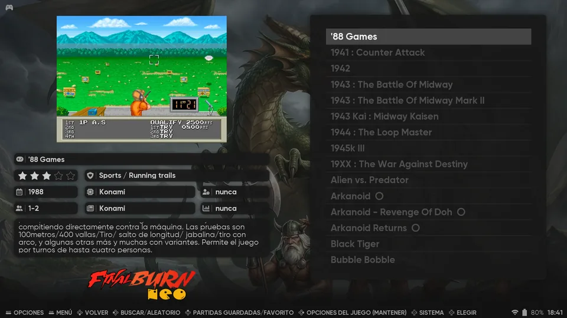
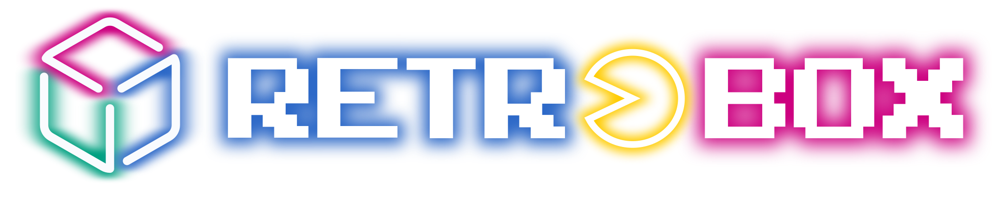
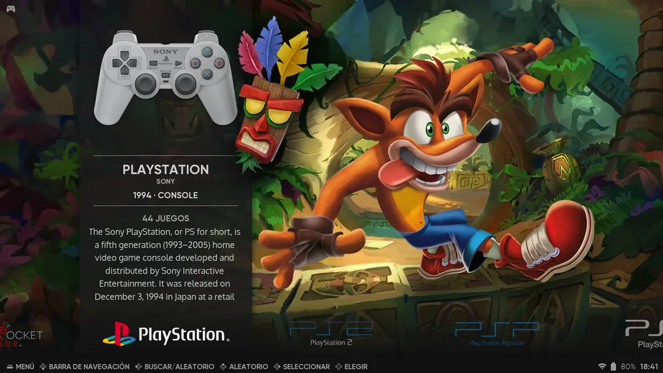
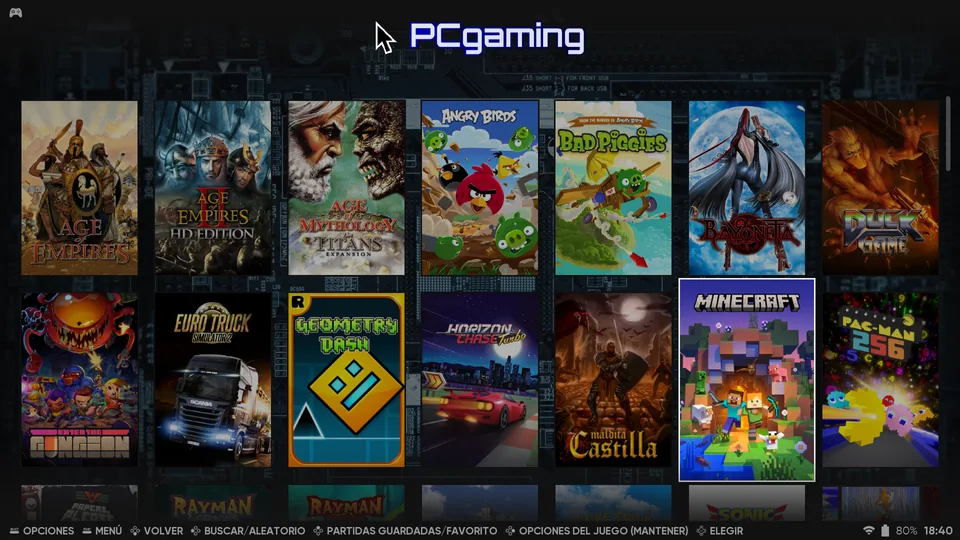

Find the game
Game lists come with screenshots, ratings, release year, developer, number of players and a description, so you know what you are launching.

Every emulator, one frontend, one config. Retro gaming on Linux that works from the couch.
curl -fsSL https://retroboxproject.github.io/install.sh | bash Debian, Ubuntu, Fedora or build from source. Install details


Game lists come with screenshots, ratings, release year, developer, number of players and a description, so you know what you are launching.

Your PC games sit next to the consoles, in a cover grid that is easy to browse with a pad or a mouse.
Batocera's configgen builds each emulator's settings at launch, per system or per game.
Resolution, shaders, bezels and a performance overlay without editing config files.
Map your pads once and use the same hotkeys in every emulator.
Run Retrobox from your desktop and come back to it with one shortcut.
EmulationStation themes give every system its own look out of the box.
Read it, fork it, send a patch. Everything lives in retrobox-core.
Retrobox drives standalone emulators and RetroArch cores.
One command installs the latest release. It picks the right packages for your system.
curl -fsSL https://retroboxproject.github.io/install.sh | bash--source to force this on any system.Read the installer script before running it if you prefer. The uninstall steps are in the README.